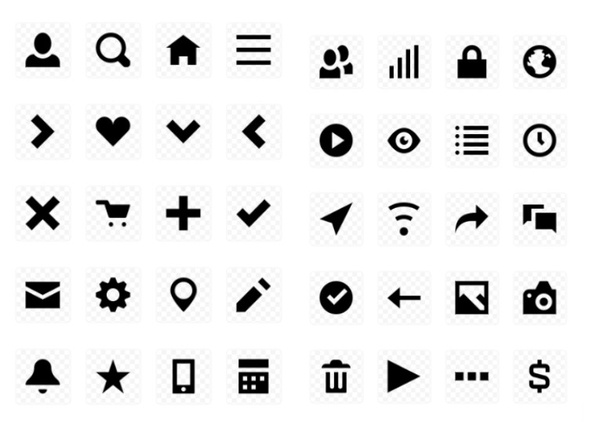

В сервисах CURSA используются Open Iconic Icon Set, распространяемый бесплатно.
Open Iconic Icon Set — это набор из 223 иконок. Каждый значок сплошной, что полезно для изменения цвета значков. Он был открыт с лицензией: MIT License. Все иконки можно использовать в личных и коммерческих целях.
